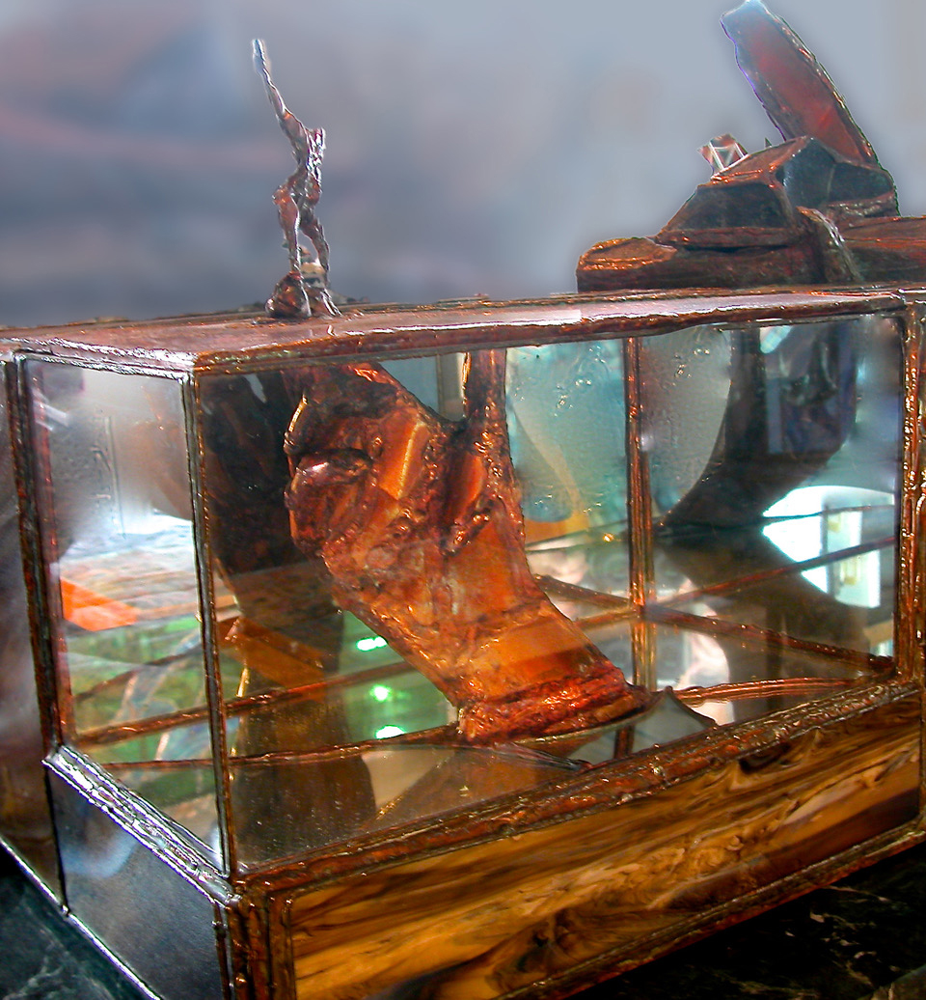

The Future
The unconscious Future of
planets and nations
has little bearing on
my personal Walkabout,
except for the iron,
circadian ebb and flow
of inner tides.
What I mean by Future
is my own feather palace
in the winds of history,
freely chosen and held
together by the spit of
Will and the rudder and
jib of Dreams.
When Imagination slid between
the legs of Purpose,
the progeny was the Future,
and her birthing occurred
on a detrital, distant shore
of the Present, where an
ashen mist spiraled into
phantasmagoric forms under
which tongues I folded the
messages of Life.
Saul Spiro, 11/1990
Childhood Mysteries
From the nigritude of the closet
in the cellar of my soul,
let me call forth fireflies
of personal light which will
dance little mazurkas of
hopeful life in the eternal
night which shrouds not only
our beginnings and ends,
but also our childhoods
which were always so rich
and complex that when we
look back at them as adults,
we wonder how we survived
the loneliness of our growth
and the sadness of our unspoken
and unsuspected dreams.
The songs of youth are rich
and hollow.
they spring from the deepest
reservoir of archetypal urgings,
inspired by halluncinatory
hopes founded without precedents,
-----growing in the shallowest pools
of callow knowledge and
innocuous faith.
Loved ones extend beckoning
arms and emit wonderfully warm,
glaikit sounds as they eye our
first toddling steps.
No one knows whether we
really ever will learn to walk.
let alone run, or race,
or race to win.
Days are endless, seasons eternal,
years epochal,
vacations paradisical.
Then Eden seals over and eternity
begins to ring on the hour.
Goals are precisely attained,
degrees achieved
and careers launched,
marriages joined
and families dispersed,
loves concluded
and friendships faded,
significance surmounted
and purpose dropped and lost
in nostalgic places paved over
long ago with cynicism
and lit by other’s fire.
The passionate matters of
childhood pass like quicksilver
between the cracks of
maturity in the armor of
children’s time,
and we grow suddenly limp
with the knowledge that
what is left is only
a matter of Art, Creativity,
Loneliness, Love, and Death.
The old concept of eternity
in the minds of youth,
comes back at the end
to haunt us in a big
and final way.
Saul Spiro, 8/1993
The Hand of the Past
We balance on the disguised fingers
of the hand of the Past,
thrusting through apertures
ingressing the Present---
aware only of a couple of rocky prominences
upon which we perform
our acrobatic handstand,
full of hubris at our expert balance,
and the knowledge of who
and where we are.
Ironically, the Past upon viewing its Future
----which is us---
has no sense or vision of that which
will use it with such confidence
and appropriation.
Insensate fingers and a hidden hand reaching up.
Balanced hands touching upon an
unrecognized substance---
reaching down.
Neither aware of reaching, at all.
The hand of the Past in the mirror box
of time,
reflecting down into an
infinite regress of silvered surfaces
and smoke.
Saul Spiro, 6/1998

Hand of the Past, 1988
A Dangling participle
Fleeting glimpses of the past
like from a car window
at twilight.
Moments of recognition inundated
by a landscape at dusk
and crepuscular foreground
obscuring the old, overall
view.
Disembodied shadows of strangers
who always filled the stage,
and are no more,
along with memories of friends
who added hints of familiarity
to the chaos then -- -- -- --
and now again.
Where have we been,
and how did we arrive
so soon? Death is only a sideshow
considering what we’ve lost,
which is our past.
The living past: an oxymoron
with a future in the fragments
of a life -- -- -- -
a participle dangling in the
gloaming of a paragraph
without a story.
We take a Parthian shot at eternity.
Saul Spiro, 1/2001
In a Dark Attic
In the dark attic
lying on the floor
and leaning against a wall cushion.
Becoming aware of the folding staircase
having mysteriously drawn itself
up and closed tightly.
In the darkness the appearance of a
pale rainbow.
Isolated. Thinking as if these were
last thoughts,
leading one to consider the
usual mulling over of what might
have been done differently;
or maybe focusing upon one’s
honorable accomplishments.
But what about a refulgent idea in the
attic darkness,
of a reformation of planning in
an innovative present,
instead of rumination about a
nostalgic past
or an ominous future?
Suppose one’s last line is:
“this is what I will do now!”
And then the staircase descends
on its own.
Saul Spiro, 02/2012